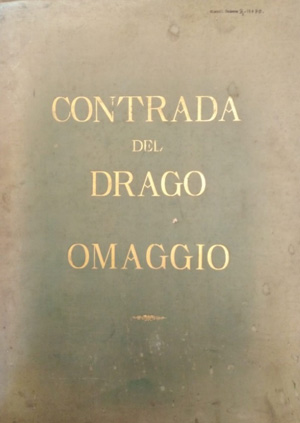

- CINQUE SECOLI DI OPERE A STAMPA SULLE CONTRADE E IL PALIO -
- DAL 1900 AL 1944 -
|
A coloro che usano il computer
e vogliono fare una ricerca all'interno di questa pagina,
consigliamo di cliccare sopra queste righe
e digitare i tasti CTRL+F .
Si aprirà una finestra dove poter scrivere la parola chiave.
Cliccando sull'icona del libro si accede alla immagine ingrandita della copertina, a una eventuale recensione più ampia e a eventuali ristampe.

 |
(1900) - Contrada della Torre - VIII Gennaio MDCCCC - NOZZE CHIGI-ZONDADARI COLONNA - [Diario delle Cerimonie e Feste fatte in Siena nella creatione del S.mo Vicario di Cristo Papa Alessandro VII] - Siena, s.n.t., 1900
Omaggio della Contrada della Torre a ricordo delle nozze fra Angelo Chigi Zondadari dei Marchesi di San Quirico e la principessa Isabella Colonna di Roma.
 |
(1900) - Contrada del Drago - NOZZE NOZZOLI-SARROCCHI - [Vecchie Nozze Senesi 1672-1775] - Siena, Tip. Edit. S.Bernardino, 1900
Testo siglato G.B.C.
 |
(1900) - Contrada dell'Istrice - NOTIZIE SULLA VITA E LE OPERE DEL PINTURICCHIO - scritte dal contemporaneo Sigismondo Tizio
con note del Dott. Luigi Billi -
Omaggio agli Ill.mi Sigg. Protettori - Siena, Tip. Carlo Nava, 1900
Rarissima pubblicazione della Contrada dell'Istrice nella quale viene pubblicata la documentazione originale di S.Tizio sulla sepoltura di Bernardino di Betto nel 1513, nella Chiesa
di San Vincenzo e Anastasio, l'attuale oratorio della Contrada. Ristampato in copia anastatica nel 2013.
 |
(1900) - Soc. di Mutuo Soccorso del Rinoceronte - STATUTO E REGOLAMENTO - Siena, Tip. Cooperativa, 1900
E' il più antico statuto della Società, fondata il 1° dicembre 1876, del quale abbiamo notizia.
 |
(1901) - Prof. Cav. Antonio Lombardi - XVI Giugno MCMI - CONTRADA DELLA TARTUCA - Siena, Tip. Lit. Sordomuti di L.Lazzeri, 1901
Discorso letto nelle onoranze fatte il 9 giugno 1901 per l'inaugurazione del busto del Prof. Comm. Tito Sarrocchi.
 |
(1901) - Contrada della Torre - 28 Luglio 1901 - RENDICONTO DELLE NUOVE CAMPANE E DEL NUOVO CAMPANILE DELLA CHIESA DELLA CONTRADA DELLA TORRE - Siena, Tip. e Lit. Sordomuti di L.Lazzeri, 1901
 |
(1901) Decinquarro Nerbi (al secolo Bernardino Querci) - UNIONE NELLA CONTRADA DELL'ISTRICE - Festa Sociale 22 Settembre 1901 - Siena, Tip. Nava, 1901
Questo rarissimo opuscolo descrive il banchetto organizzato dalla Società "L'Unione" per festeggiare il XIII anniversario della fondazione e l'ultima Vittoria del Palio straordinario del 22 settembre 1896 per il monumento a Garibaldi, con numerosi brindisi.
 |
(1902) - Nobile Contrada dell'Oca - STATUTO - REGOLAMENTO DELLA NOBILE CONTRADA DELL'OCA - Siena, Tip. Nuova Commerciale, 1902
 |
(1902) - Contrada della Tartuca - NOZZE VILIGIARDI BONCI CASUCCINI - [Note storiche relative alla Contrada] – Siena, Tip. S.Bernardino, 1902
 |
(1902) - Contrada della Tartuca - IL MAGGIO DELLA TARTUCA NEL 1682 - per le fauste nozze dell'Egregio Signore Scipione Bartalini con la Gentil Signorina
Virginia Lenzini avvenute in Pistoia il V Maggio MCMII [...] - Siena, Tip. Lazzeri, 1902
Ristampa di una poesia per le nozze Bartalini-Lenzini.
 |
(1904) - William Heywood - PALIO AND PONTE - London, Methuen & Co., 1904
L'autore che era stato Capitano del Bruco nel 1898, traccia un resoconto delle manifestazioni ludiche dell'Italia Centrale dall'epoca di Dante al XX Secolo. Un libro di 268 pagine arricchite da 27 illustrazioni. Ristampato
in italiano nel 1981 dalle Edizioni Edikronos Palermo.
 |
(1904) - Guglielmo Palmieri - PER LE AUSPICATISSIME NOZZE BALDACCONI-DONATI LA CONTRADA DEL DRAGO OFFRE - Siena li VIII Settembre MCMIV - [Relatione dell'incontri e feste fatte dalla nobilissima città di Siena dal VI ottobre MDCL al X novembre nella venuta delli Serenissimi Gran Duca, Gran Duchessa e Gran Principe di Toscana assieme con
altri Serenissimi Principi fratelli] – Siena, Tip. Carlo Nava, 1904
 |
(1904) - Nobil Contrada dell'Aquila - PER L'ANNUA SOLENNITA' DI SANTA MARIA DI SETTEMBRE - XI Settembre MDCCCCIV - Siena, Stab. Tip. Carlo Nava, 1904
Omaggio agli illustrissimi Protettori.
 |
(1905) - Magistrato delle Contrade di Siena - COSTITUZIONI - I Gennaio MCMVI – Siena, Tipografia Nuova, 1905
 |
(1905) - Alberto Comucci - LE STORICHE CONTRADE DI SIENA - Siena, Ed. Stefano Venturini, s.d. [ma 1905]
Piccola pubblicazione a soffietto con i bozzetti del Paggio Maggiore delle Contrade con i costumi rinnovati nel 1904.
 |
(1905) - Contrada della Lupa - MEMORIE STORICHE - Siena, Nuova Tipografia, 1905
 |
(1906) - Circolo degli Uniti Siena - DESCRIZIONE SOMMARIA DEL PALIO - Siena, Lazzeri, 1906
 |
(1906) - IL PALIO DI SIENA - Notizie storiche sull'origine delle corse con aggiunta la descrizione del Corteo Medievale nel nuovo ordinamento e nei nuovi costumi – Siena, Tipografia Nuova, 1906
 |
(1906) - Comune di Siena - REGOLAMENTO PER L'ESECUZIONE DELLE TRADIZIONALI CORSE DEL PALIO NELLA PIAZZA DEL CAMPO - Siena, Tipografia Cooperativa, 1906
 |
(1906) - Assunto Moretti - BREVI NOTIZIE SULLE VICENDE STORICHE DELLA NOBIL CONTRADA DEL BRUCO - Nobil Contrada del Bruco - Omaggio del Seggio e dei componenti la medesima agli Ill.mi Protettori e Signori [...] VIII Luglio MCMVI – Siena, Tipografia Nuova, 1906
Ristampato nel 1990.
 |
(1907) - IL PALIO DE LE CONTRADE DI SIENA - Associazione Nazionale per il Movimento dei Forestieri - Comitato di Siena - Anno MCMVII – Siena, Tip. e Lit. Sordomuti di L.Lazzeri, 1907
Opuscolo con brevi note e descrizione della composizione del Corteo Storico.
 |
(1907) - Nobile Contrada dell'Oca - V Maggio MCMVII - [SONETTI IN VERNACOLO DI MOMO GIOVANNELLI] - Omaggio ai Benemeriti Protettori - Siena, Stab. Tip. Carlo Nava, 1907
 |
(1907) -
Contrada della Chiocciola - XXIX giugno MCMVII - MEMORIE STORICHE - Siena, Tip. S.Bernardino, 1907
Testo di Pietro Masi con cenni descrittivi della nuova sala.
 |
(1907) - Contrada della Lupa - Siena IV Luglio MDCCCCVII - NEL CENTENARIO DELLA NASCITA DI GIUSEPPE GARIBALDI - Siena IV Luglio MDCCCCVII - Siena, Tip. Rodolfo Falb, 1907
Nell'opuscolo è riprodotta la foto donata nel 1867 da Garibaldi al fantino vittorioso Mario Bernini detto Bachicche.
 |
(1907) - Contrada della Torre - XXVIII Luglio MCMVII - NOTE STORICHE - Omaggio ai Protettori – Siena, Tipografia Nuova, 1907
 |
(1908) - Nobile Contrada dell'Oca - X Maggio MCMVIII - [SONETTI IN VERNACOLO] - Omaggio ai Benemeriti Protettori - Siena, Tip. Carlo Nava, 1908
Sonetti di Momo Giovannelli.
 |
(1908) - Girolamo Gigli - S.CATERINA DA SIENA - Contrada del Drago - 24 Maggio 1908 - Solennizzandosi con pompa solenne nella Chiesa della Contrada del Drago [...] - Siena, Studio Tip. Nava, 1908
Questo sonetto venne presentato in due diverse forme tipografiche.
 |
(1908) - Contrada del Drago - OMAGGIO [A S.E. REV.MA MONS. GIOVAN BATTISTA BORACCHIA, VESCOVO DI MASSA MARITTIMA... ISCRIVEVASI NELLA CONTRADA DEL DRAGO NUOVO PROTETTORE...] - Siena, Tip. C.Nava, 1908
Questo album omaggio di grande formato (cm.45x32) contiene in prima pagina la foto Lombardi del Paggio Maggiore della Contrada del Drago con il costume del 1904 oltre a ulteriori 10 immagini inerenti la vita di S. Caterina tratti dagli affreschi di vari artisti.
 |
(1908) - Contrada del Drago - OMAGGIO [A SUA ECCELLENZA REVERENDISSIMA MONS. GIACOMO DALLA CHIESA ARCIVESCOVO DI BOLOGNA ... ISCRIVEVASI NELLA CONTRADA DEL DRAGO NUOVO PROTETTORE...] - Siena, Tip. C.Nava, 1908
La pubblicazione è corredata da 11 grandi tavole fotografiche.
 |
(1908) - Contrada della Chiocciola - XXIX giugno MCMVIII - MEMORIE STORICHE - Omaggio agli Illustrissimi Signori Protettori – Siena, Tip. Pontificia S.Bernardino, 1908
Pubblicazione curata da Pietro Masi.
 |
(1908) - [Narciso Pucci] - CONTRIBUTO DELLE CONTRADE E DI ALTRE ISTITUZIONI IN FAVORE DELLO "STUDIO SENESE" NEL 1740 - Contrada della Lupa - Omaggio agli Illustrissimi Signori Protettori - 23 agosto 1908 – Siena, Stab. Tip. C. Nava, 1908
 |
(1908) - [Narciso Pucci] - CONTRIBUTO DELLE CONTRADE E DI ALTRE ISTITUZIONI IN FAVORE DELLO "STUDIO SENESE" NEL 1740 - Siena, Stab. Tip. C. Nava, 1908
Ulteriore edizione uscita nel medesimo anno per altra istituzione.
 |
(1908) - Contrada della Selva - XXIII Agosto MCMVIII - MEMORIE STORICHE - Omaggio agli Illustrissimi Signori Protettori – Siena, Tip. S.Bernardino, 1908
Testo siglato N.S.G.
 |
(1908) - Ezio Felici - LE FESTE DI SIENA - Sonetti in vernacolo - [Dialogo tra popolani] - Prefazione del Prof. Gildo Valeggia – Siena, Tipografia Nuova, 1908
 |
(1909) - Comune di Siena - LA "PALLONATA" - SIENA 1909 - Giuoco Medioevale Senese – Siena, Tip. C.Nava, 1909
 |
(1909) - Gino Regiori - IL PALIO DI SIENA - Nove sonetti dialettali – Siena, Ed. Cesare Grassi, 1909
 |
(1909) - Nobil Contrada dell'Aquila - 12 Settembre 1909 - [MEMORIA STORICA DEI RESTAURI ESEGUITI NELL'ORATORIO] - Omaggio agli Ill.mi Signori Protettori – Siena, Tip. C.Nava, 1909
 |
(1909) - Renzo Larco - IL PALIO DI SIENA - con la descrizione della Città e di altre feste storiche e religiose – Siena, Libreria Giuntini & Bentivoglio, 1909
Nuove edizioni, rivedute e aggiornate vennero stampate nel 1922 e nel 1929.
 |
(1910) - Angelo Redaelli - PER L'ANTICA CURVA DEL CAMPO - Il Palio – Bologna, Coop. Tip. Azzoguidi, 1910
 |
(1910) - Momo Giovannelli - SENA VETUS... NOVA - Poesie in vernacolo senese - Siena, Giuntini . Bentivoglio Editori, 1910
Copertina illustrata da Ferruccio Pasqui. Sonetti in vernacolo sul Palio, le contrade e argomenti vari. Forse l'opera più bella di questo grande poeta del vernacolo senese.
 |
(1910) - Gerardo Righi Parenti (Parige) - NUVOLONI E SERENO - Commedia - Tre quadretti in
vernacolo senese d'ambiente del Palio – Siena, Tip. Editrice S.Bernardino, 1910
Copertina di Ferruccio Pasqui.
 |
(1910 ?) - Contrada della Selva - SOCIETA' DEL PALIO - STATUTO, REGOLAMENTO - Siena, Stab. d’Arti Grafiche S.Bernardino - s.d. [1910 ?]
 |
(1910) -
Nobile Contrada dell'Aquila - [MEMORIE STORICHE] - Anno MCMX Domenica 11 di Settembre - Siena, Tip. Carlo Nava, 1910
Edito per l'annuale solennità del nome di Maria Vergine. Testo del Maestro Flavio Corsi.
 |
(1911) - Nobil Contrada dell'Oca - 30 Aprile 1911 - ORATORIO DELLA CAMERA DI CATERINA BENINCASA - Affreschi del Prof. Alessandro Franchi - Omaggio ai Benemeriti Protettori - Siena, Tip.e Lit. Sordomuti ditta L.Lazzeri, 1911
 |
(1911) -
Vafer - SIENA. CENNI STORICI E IMPRESSIONI SU LE CONTRADE E SU LO STORICO PALIO - Siena, Nuova Tipografia, 1911
Una seconda edizione fu stampata nel 1912.
 |
(1912) - Gerardo Righi Parenti (Parige) - L'ANIMA DEL PALIO DI SIENA - Siena, Ed. Lazzeri, 1912
1ª edizione - Copertina di Federigo Joni. Geniale esposizione storico-aneddotica del Palio di Siena, arricchita da circa 200 illustrazioni. Opera complessa che è un inno a Siena e alle sue gloriose tradizioni.
 |
(1912) - Helen Josephine Robins - IN THE CITY OF THE CONTRADE - Siena, Tip. Sociale, 1912
Testo in lingua inglese corredato da alcune foto.
 |
(1912) - Bettino Marchetti- VITA DI CONTRADE - Bozzetto illustrato - 1ª edizione realizzata per il Comune di Siena – Siena, Tip. e Lit. Sordomuti di Lazzeri, 1912
La 2ª edizione venne stampata nel 1927 dallo Stab. Arti Grafiche Lazzeri.
 |
(1912) -
Bettino Marchetti - VITA DI CONTRADE - Bozzetto illustrato -
Omaggio della Nobile Contrada dell'Oca ai Benemeriti suoi Protettori 5 maggio 1912 - Siena, Tip. e Lit. Sordomuti di Lazzeri, 1912
 |
(1912) - Nobil Contrada del Nicchio - 11 agosto 1912 - [MEMORIE STORICHE E ARTISTICHE] - Siena, Tip. Sociale, 1912
Omaggio ai Benemeriti Protettori
 |
(1913) - Carlo Alberto Cambi Gado - LE CONTRADE DI SIENA E LA FESTA DEL PALIO - Siena, Tip. Sordomuti di Lazzeri, 1913
Copertina illustrata da Primo Lavagnini. A cura dell'Associazione Nazionale Italiana per il movimento dei forestieri.
 |
(1913) - Bettino Marchetti - S.CATERINA DA SIENA - Breve riassunto della vita - Omaggio della Nobil Contrada dell'Oca ai Benemeriti suoi Protettori – Siena, Tip. Sociale, 1913
 |
(1913) - Don Venanzio Savelli - XX Luglio MCMXIII - NELLA CONTRADA DEI PROVENZANI - Contrada della Giraffa – Siena, Tip. Nava, 1913
L'autore compare in calce al testo con la sigla S.V.. L'opuscolo venne ristampato nel 1920, 1923 e 1924.
 |
(1913) - Assunto Moretti - [ELENCO DELLE VITTORIE] - Nobil Contrada del Bruco - Omaggio ai Benemeriti Protettori - Siena, Lit. Tarducci & C., s.d. [ma 1913]
Opuscolo. In copertina l'immagine del drappo vinto nella Corsa alla Romana del 19 agosto 1894.
 |
(1913) - Società di Mutuo Soccorso del Rinoceronte in Siena - STATUTO-REGOLAMENTO - Modificato nell'Adunanza Generale del 12 settembre 1912 – Siena, Tip. Dell'Ancora, 1913
Successivo a quello pubblicato nel 1900.
 |
(1913) - La Nobil Contrada dell'Aquila - IN OCCASIONE DELLA FESTA ANNUALE - Agli Illustrissimi suoi Protettori offre - Domenica XIV Settembre MCMXIII - Siena, Tip. Carlo Nava, 1913
Poche pagine per raccontare la storia della contrada e tutti i personaggi che abitarono nel suo territorio nel corso dei secoli.
 |
(1914) Contrada del Drago - PER LE NOZZE ROSSI-MAZZI - Febbraio 1914 - Omaggio della Contrada del Drago - Siena, Tip. Lazzeri, 1914
All'interno della pubblicazione anche un capitolo dedicato alle Bufalate e feste del 1650.
 |
(1914) - Nobil Contrada del Nicchio - 9 agosto 1914 - [LA BATTAGLIA DI MONTAPERTO] - Omaggio ai Benemeriti Protettori – Siena, Tip. Sociale, 1914
 |
(1914) - Vittorio Lusini - LA MADONNA MATER MISERICORDIAE DELLA CONTRADA DELLA SELVA - Nota storico - artistica – Siena, Arti Grafiche Lazzeri, 1914
Opuscolo ristampato nel 1930 dalla Tipografia ex Cooperativa.
 |
(1915) - Bettino Marchetti - LA CONTRADA DELL'OCA PER LA LEGITTIMA TUTELA DEI SUOI COLORI - XXIX Aprile MCMXV - Omaggio ai Benemeriti Protettori – Siena, Grafiche Lazzeri, Tip. Tarducci & C., 1915
 |
(1915) - Contrada del Drago - 30 Maggio 1915 - SOLENNIZZANDOSI CON POMPA SOLENNE NELLA CHIESA DELLA CONTRADA DEL DRAGO L'ANNUALE FESTA DELLA NOSTRA SERAFICA VERGINE SANTA CATERINA DA SIENA -
Il Seggio e i componenti della Contrada alla loro Santa Patrona questi sonetti del letterato Senese Girolamo Gigli [...] – Siena, Stab. Tip. Carlo Nava, 1915
 |
(1915) - Contrada della Tartuca - XIII Giugno MCMXV - [NOTE STORICHE] - Omaggio della Contrada della Tartuca agli Ill.mi e Benemeriti Protettori - Siena, Stab. Arti Grafiche Lazzeri, 1915
 |
(1915) - Virgilio Grassi - XXVII Giugno MCMXV - CONTRADA DELL'UNICORNO - Siena, Tip. Cooperativa, 1915
Avviso di sospensione dei festeggiamenti ai Signori Protettori per destinare le spese a favore dei soldati combattenti.
 |
(1915) -
Nobil Contrada dell'Aquila - La domenica 12 Settembre 1915 - PER LA SOLITA ANNUA FESTA DEL NOME SS. DI MARIA - Agl'Ill.mi Signori Protettori vengono offerte le seguenti composizioni - Siena, Tip. Carlo Nava, 1915
Il libretto è introdotto dall'estratto del verbale della riunione del Seggio che delibera che ogni spesa stabilita per solennizzare la Festa Titolare, venga invece erogata a favore delle famiglie dei soldati in guerra.
 |
(1916) - Nobil Contrada dell'Aquila - La Domenica 10 Settembre 1916 - [...] PER LA FESTA DEL NOME SS. DI MARIA [...] [APPUNTI STORICI] - Offerto agli Illustrissimi Signori Protettori - Siena, Tip. Carlo Nava, 1916
La facciata della chiesa dei Tredicini che appare in copertina è attribuita a Flaminio del Turco.
 |
(1918) - Contrada della Lupa - XVII Marzo MCMXVIII - [AI PROFUGHI DELLE NOBILI TERRE (IRREDENTE)... A RICORDO DELLA GRADITISSIMA VISITA...] - [Cenni Storici] – Siena, Tip. Carlo Nava, 1918
Offerto ai profughi.
 |
(1919) - Bettino Marchetti - SPIGOLATURE STORICHE RIGUARDANTI LA CASA DI S.CATERINA - 11 Maggio 1919 - Omaggio della Nobile Contrada dell'Oca ai suoi Benemeriti Protettori – Siena, Stab. Tip. S.Bernardino, 1919
 |
(1919) - Virgilio Grassi - Maggio 1919 - I MALAVOLTI E IL POGGIO MALAVOLTI - Ricordi storici nel territorio della Contrada del Drago - Omaggio agli Ill.mi Sigg.ri Protettori della Contrada – Siena, Tip. L.Lazzeri, 1919
I fascicolo della serie.
 |
(1919) - Contrada della Tartuca - OMAGGIO 1919 - [Ricordo dei caduti della Grande Guerra appartenenti alla Contrada] – Siena, Tip. Lazzeri, 1919
 |
(1919) - Pietro Masi - XXIX Giugno MCMXIX - CONTRADA DELLA CHIOCCIOLA - [Componimento poetico] - Siena, Tip. S.Bernardino, 1919
Pubblicazione edita in memoria degli appartenenti alla Contrada caduti nella Grande Guerra.
 |
(1919) - Nobile Contrada dell'Aquila - nella Domenica 14 Settembre 1919 - CELEBRANDO LA FESTA DEL NOME SANTISSIMO DI MARIA - inaugura un ricordo ai suoi prodi caduti in guerra – Siena, Tip. Carlo Nava, 1919
 |
(1920) - Bettino Marchetti - GUIDA ARTISTICA DEL SANTUARIO DI S.CATERINA IN FONTEBRANDA IN SIENA - 2 Maggio 1920 - Omaggio della Nobile Contrada dell'Oca ai Benemeriti suoi Protettori – Siena, Tip. S.Bernardino, 1920
 |
(1920) - Virgilio Grassi - Maggio 1920 - LA CASA DELLA MISERICORDIA E LA CASA DELLA SAPIENZA - Ricordi storici nel territorio della Contrada del Drago - Omaggio agli Ill.mi Sigg.ri Protettori della Contrada - Siena, Tip. Nava, 1920
II fascicolo della serie.
 |
(1920) - Primo Cinelli - Contrada della Lupa - NELLA SERENITA' DELLA GLORIA - Discorso detto il 30 Maggio 1920 nella sala della contrada della Lupa per l'inaugurazione del monumento ai caduti in guerra – Siena, Stab. Arti Grafiche Lazzeri (Tip. Sordomuti), 1920
 |
(1920) - Contrada della Lupa - [IN MEMORIA DEI CADUTI DELLA PATRIA] - Siena, s. n. t. , 1920
La copertina è la stessa di una pubblicazione del 1918.
 |
(1920) - Pietro Masi - Contrada della Chiocciola - XXIX Giugno MCMXX - MEMORIE STORICHE - Omaggio agli Illustrissimi Signori Protettori – Siena, Stab. Tip. S.Bernardino, 1920
 |
(1920) - Don Venanzio Savelli - XVIII Luglio MCMXX - NELLA CONTRADA DEI PROVENZANI - Contrada della Giraffa – Siena, Tip. Nava, 1920
L'autore compare in calce al testo con la sigla S.V.. La prima edizione di questo opuscolo è del 1913. Venne ristampato anche nel 1923 e nel 1924.
 |
(1920) - Contrada della Pantera - RICORDO PER I CADUTI DELLA GRANDE GUERRA APPARTENENTI ALLA CONTRADA - Siena, Tip. Sociale, 1920
| | | | | | | | | | | | | | | | | | | | | | | | | | | | | | | | | | | | | | | | | | | | | | | | | | | | | | | | | | | | | | | | | | | | | | | | | | | | | | | | | |